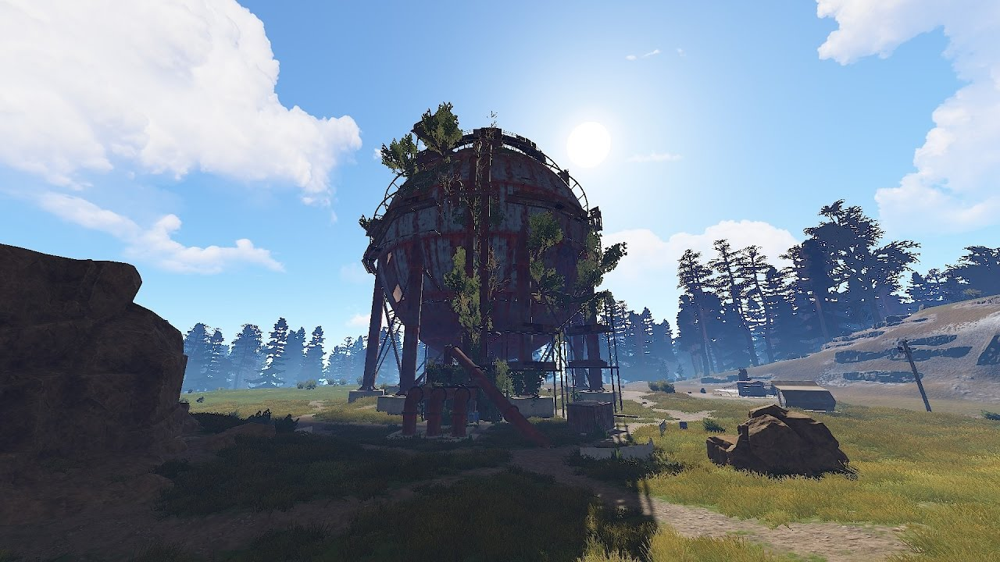
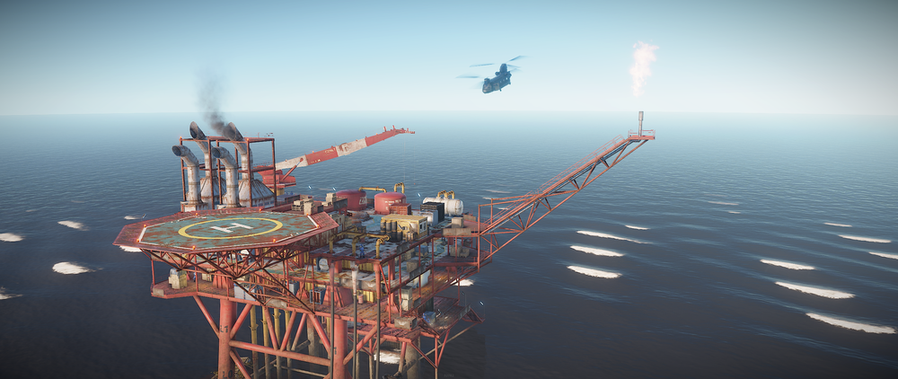
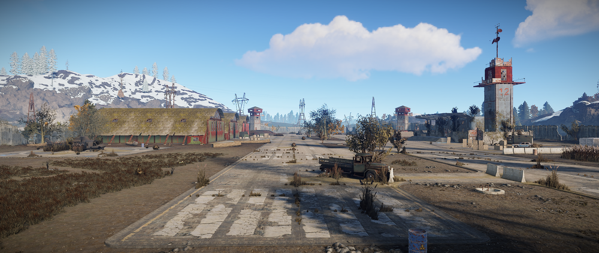
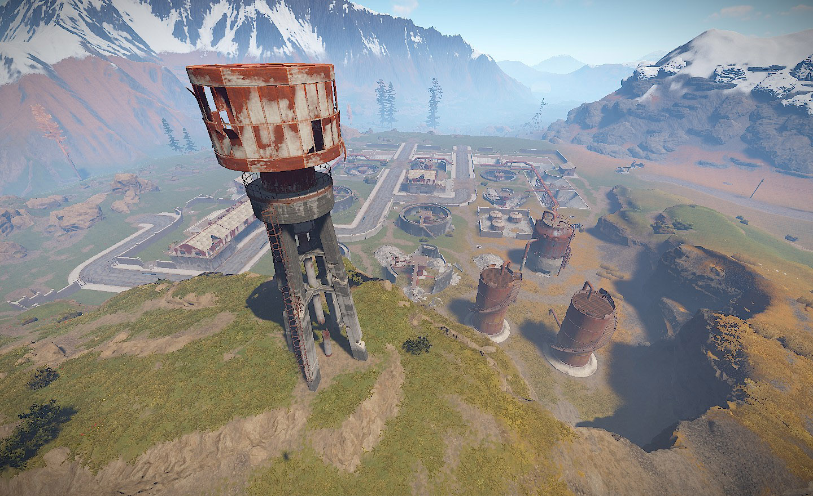
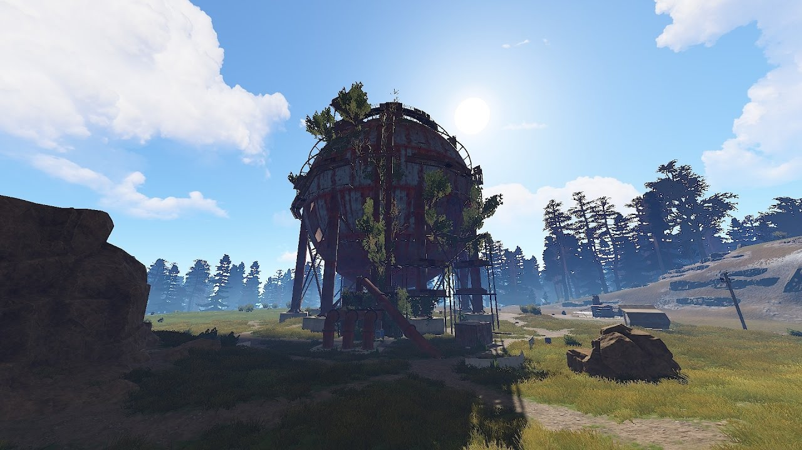
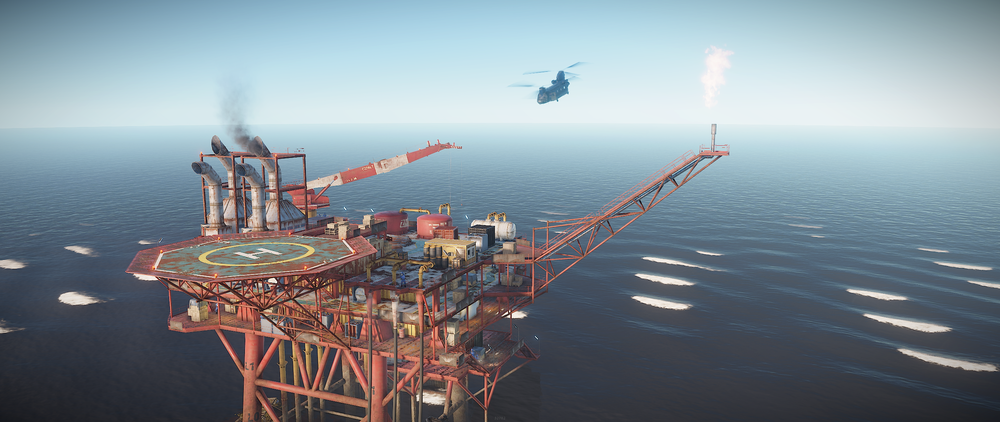
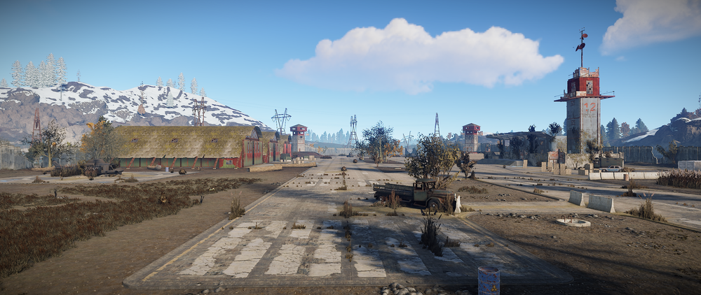
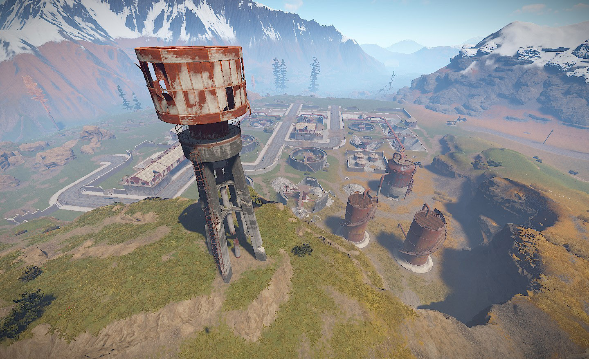

Le Dôme
Le Lunch site

L'oil Rig
Le tunnel militaire

L'AirField
La water treatment
Dans rust il y a des RadTowns (des zones de loot) dans laquel il y a des radiation
c pour cela qu'il faut s'équiper d'une Asmat(combinaison anti-radiation)pour ne pas prendre de radiation se qui fait descendre la vie
|
Le Dôme  |
Le Lunch site
|
L'oil Rig  |
|
Le tunnel militaire
|
L'AirField  |
La water treatment  |